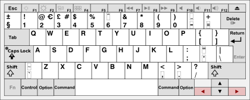
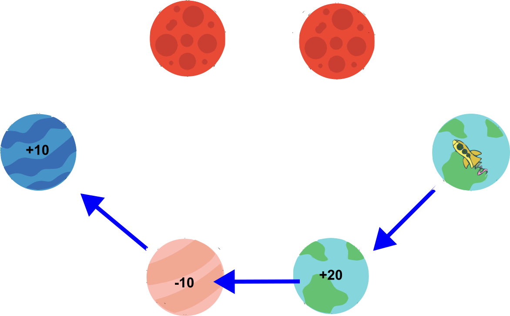

The Space Adventure game can now begin.
Press the right arrow key to start the real experiment.
Welcome to the Space Adventure game!
Today you will have the opportunity to take part in a journey through space.
On your journey, you will be controlling a spaceship and visiting different planetary systems
with the goal of collecting as many points as possible.
The more points you collect, the more money you will get for your participation!
Before you start, the following tutorial will teach you everything you need to play the Space Adventure game,
such as how to move the spaceship, how the planetary systems work and other game rules.
Please press the right arrow key to continue or the left arrow key to go back one page.
In each game trial you will visit a new planetary system.
A planetary system will always consist of 6 planets
and an example is shown on the next instructions page.
Please press the right arrow key to continue or the left arrow key to go back one page.
You will be able to guide the yellow spaceship shown below to different planets.
Please press the right arrow key to continue or the left arrow key to go back one page.
There are different types of planets (indicated by colour).
Some planet types will give you points and others will make you lose points when you land on them (as shown below).
Your goal is to collect as many points as possible.
A blue bar at the top of the screen will show you the amount of points you have already gathered to help you keep track.
You can see the points bar on the next intruction screen.
The bar will turn red if you are running low on points
and the game will terminate if you run out of points completely.
Please press the right arrow key to continue or the left arrow key to go back one page.
Please press the right arrow key to continue or the left arrow key to go back one page.
There are two ways in which you can travel to different planets.
You can either go one step in the clockwise direction by pressing the M-key on your keyboard
or you can go two steps in the clockwise direction (i.e. to a not directly adjacent planet) by pressing the X-key.
Please press the right arrow key to continue or the left arrow key to go back one page.
To get used to this you will now get to practice moving the rocket one step in the clockwise direction (M-key).
Please try this command a few times by repeatedly pressing the M-key in the next instruction screen.
Please always press the M-key with your right index finger.
The next instructions will show automatically when you have done this enough times.
Please press the right arrow key to continue or the left arrow key to go back one page.
-2
Please press the M-key.
You will now also get to practice moving the rocket two steps in the clockwise direction (X-key)
Please try this command a few times by repeatedly pressing the X-key in the next instruction screen.
Please always press the X-key with your left index finger.
The next instructions will show automatically when you have done this enough times.
Please press the right arrow key to continue.
Please press the M-key.
Please press the X-key.
You just learned how to to navigate to different planets.
You will now learn that landing on a planet can sometimes be affected by cosmic conditions.
On most planets in a planetary system the landing conditions are ideal.
So, your spaceship will be able to land reliably on the target planet you are heading for.
However, in every planetary system there is also one planet that is surrounded by an asteroid storm.
You can always see clearly see which planet is affected. An example is shown on the next instruction screen.
Please press the right arrow to continue.
Landing on this planet is more difficult because of the asteroid storm.
Therefore, the rocket might sometimes miss the target planet
and instead land on one of the two directly adjacent planets.
So, if you try and go to a planet with asteroids, please remember
that you will not always reach the location you planned to go to.
Please press the right arrow key to continue or the left arrow key to go back one page.
Here you see an example of where the rocket might land if you go forward
one step (picture to the left) or two steps (picture to the right) in order to reach a planet with asteroids.
The solid arrows show the target planet and
the dashed arrows show you where the rocket might land if the target is missed.
Please press the right arrow key to continue or the left arrow key to go back one page.
Target missed.
To give you a feel for how reliable landing in an asteroid storm is, you can try this out a few times in the next instruction screen,
where you have to repeatedly go forward one or two step in order to reach the planet with the asteroids.
Be aware that the chance of missing the target planet in an asteroid storm does not change throughout the game.
Please press the right arrow key to start the practice or the left arrow key to go back one page.
One last thing you need to know:
In each new planetary system you can travel to 3 planets and you have to try to collect as much points as possible on the journey.
The number of green squares in the centre of the screen shows you how many planets you can still visit before moving to a new planetary system.
Please press the right arrow key to continue or the left arrow key to go back one page.
To summarize:
Your task is to collect as many points as possible by travelling from planet to planet.
You can travel either one (M-key) or two steps (X-key) in the clockwise direction.
Different planet types can bring or make you lose points.
The bar at the top of the screen shows you how many points you currently have.
In each planetary system, there is one planet that is surrounded by an asteroid storm
which makes landing on that planet more difficult.
This can sometimes cause you to land on one of its neighbouring planets instead of the target planet.
Please press the right arrow key to continue or the left arrow key to go back one page.
One important tip:
It will help you a lot in the task if you plan all 3 of your travel steps in advance.
Example: Imagine you start in the planet constellation given below.
If you plan only two moves in advance, you would move forward one step to the +20 planet and then
move two steps forward to the +10 planet. However, then you would be forced to travel to one of the red planets (-20) and in total earn only 10 points.
Please press the right arrow key to continue or the left arrow key to go back one page.
So, in this planetary system it would have been better to lose a smaller amount of points first
by going one step to the -10 planet and then travel to the +10 planet.
In total you would have gained 20 points by doing this.
You will now practice a whole game trial.
Please plan your 3 travel steps in advance so that you get as many points as possible but
do not enter new travelling commands while the rocket is still moving.
The rocket has to land first before you can input your next action.
You can always take as much time as you need to plan your journey.
There is no asteroid storm in these sample runs for simplicity.
Don't forget to press the M-key with your right index finger and the X-key with your left index finger.
Please press the right arrow key to continue or the left arrow key to go back one page.
Perfect, you found the best route!
There is still a better route. Please try again.
That was still not the best route. Please try one more time!
That was still not exactly right..
Please press the right arrow key to see the best route.
The best route is:
Congratulations! You have new learned everything you need to know for your Space Adventure!
Please press the right arrow key to continue.
The Space Adventure game can now begin.
Press the right arrow key to start the real experiment.
Das Training Spiel ist zu Ende.
Ihre Training Treibstoffreserven sind aufgebraucht.
Ihr Weltraumabenteuer kann nun beginnen.
Drücken Sie die rechte Pfeiltaste, um fortzufahren.
You are moving to a new planetary system...
Please take a bit of time to rest in case you feel tired....
Press the right arrow key to continue the experiment.
The experiment is now over.
Thank you for your participation.
Please press the right arrow key to finish the experiment.
The game is over.
Unfortunately you ran out of fuel.
Thank you for your particpation!
Please press the right-arrow key to finish the experiment.